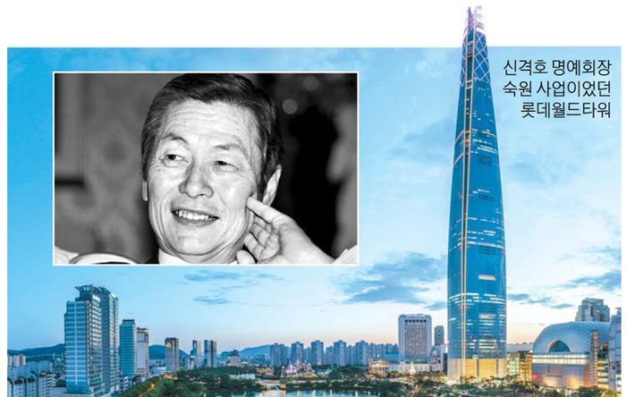
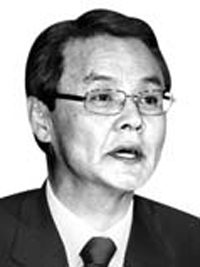

매체 매일경제보도일 2020-01-20
"애국심 때문에 생긴 적자, 회장님은 웃으셨다"
홍사덕 前 국회부의장이 기억하는 故 신격호 명예회장
78년 롯데건설 기획실장 당시
포항제철 확장공사 10억 적자
"공사현장 부정없다" 보고하자
손해나도 더이상 불호령 안해
잠실 롯데월드타워 지날 때마다
한강기적 일군 기업가정신 생각

"102억원짜리 포항제철 공사가 아직 끝도 안 난 채 10억원 넘는 적자를 낸 게 말이 되는가요?"
1978년 서울 중구 롯데호텔에 위치한 신격호 롯데그룹 명예회장(당시 회장) 집무실. 홍사덕 전 국회부의장 기억 속 신 명예회장은 형형한 눈빛과 쏘아붙이는 날카로운 질문이 특징인 인물로 남아 있다. 1975년 말 유신독재가 강화되면서 기자직을 내려놓은 홍 전 부의장은 1981년 국회의원에 당선되기까지 직업을 네 개 거쳤다. 그중 하나가 롯데건설 기획실장이다. 롯데에서 일하던 3개월여 기간 동안 포항제철 확장 공사가 큰 적자를 내자 신 명예회장의 불호령을 맞은 것이다.
강남 아파트 한 채를 1000만원이면 사던 시절 적자 10억원은 큰 액수였다. 다음날 아침 일찍 감사팀을 꾸려 포항으로 향한 홍 전 부의장은 생각보다 일찍, 이틀 만에 귀경했다. 현장에서의 답이 간단했기 때문이다. 현장소장은 박태준 포스코 명예회장 고집 때문이라고 설명했다. 확장 공사를 빨리, 정확히 하겠다는 집념으로 무장한 박 명예회장 고집을 꺾을 수 있는 사람이 없었다는 것이다. 콘크리트 바닥 공사를 마친 다음에도 마음에 들지 않는 구석이 생기면 다이너마이트로 폭파한 다음 새로 시공했고, 6개월 공기를 단축시키면서 야간에 들어가는 노임 등 경비를 일절 반영해주지 않는다는 것이었다.
홍 전 부의장은 사직서 한 장만 품고 신 명예회장 집무실에 들어갔다. 그는 "회장님, 현장에서 도둑질해먹은 사람도 없고 부정을 저지른 직원도 없었습니다. 박태준 회장님의 애국심 때문에 생긴 적자이고, 그 적자는 회장님이 대한민국에 헌납하신 걸로 생각하시는 수밖에 없겠습니다" 하고 답했다. 신 명예회장은 한동안 홍 전 부의장을 응시하더니 손짓으로 물러가라는 표시를 했다. 절을 하고 나오면서 잠깐 뒤돌아봤을 때 포착한 신 명예회장은 분명 웃는 표정을 지었던 것으로 홍 전 부의장은 기억했다. 홍 전 부의장은 매일경제와 전화 인터뷰하면서 자신이 겪은 일화를 소개하며 "그때 읽었던 기업가 신 회장의 나라 사랑하는 마음을 똑똑히 기억하기 때문에 그 이후 세상 사람들이 뭐라고 말하건 그가 고향과 나라와 민족을 사랑했다는 점을 의심한 적이 없었다"고 말했다. 그는 이어 "갓 입사한 신입 간부가 턱없는 소리를 하니 웃은 것 같기도 하다"며 "그 이후 신 회장님은 포항에서의 적자에 대해 더 묻는 일이 없었다"고도 말했다.

홍 전 부의장은 신 명예회장과의 경험이 과거 산업화 시기 기업인들에 대해 회의적이었던 자신의 시각을 바로잡는 데 영향을 미쳤다고 고백한 바 있다. "재일교포 가운데 큰 부자들이 여럿 있었지만 일본에서 마련한 돈을 갖고 들어와 한국의 산업화 과정에 이바지한 사람은 몇 명 없다"고 홍 전 부의장은 강조했다. 그는 "특히 신 회장은 세대를 넘어 지금까지도 한국 경제에 이바지하고 있으니 참으로 고마운 일"이라고도 말했다.
업무상 잠실 롯데월드타워를 자주 지나간다는 홍 전 부의장은 "신 회장님이 맑은 정신으로 당신이 세워놓은 저 타워를 볼 수 있으면 얼마나 좋았을까 비서에게 말하곤 한다"며 "최근 급격히 몸이 안 좋아지는 바람에 조문을 갈 수 없는 것이 매우 안타깝다"고 말했다. 2017년 문을 연 123층 규모 롯데월드타워는 신 명예회장이 1980년대부터 용지를 매입하며 준비해 온 숙원 사업이었다. 신 명예회장 영면은 1세대 창업주 시대가 막을 내리는 의미도 있다.
홍 전 부의장은 "`한강의 기적`은 이병철, 정주영, 신격호 등 기업가들이 없었다면 이루지 못했을 일"이라며 "위기 때마다 나라를 구한 이들의 정신은 환경에 따라 때로 숨거나 동면하는 척할 수는 있어도 결코 죽지 않는다"고 말했다.
[강인선 기자]
[ⓒ 매일경제 & mk.co.kr, 무단전재 및 재배포 금지]
[출처]
https://www.mk.co.kr/news/society/view/2020/01/66149/